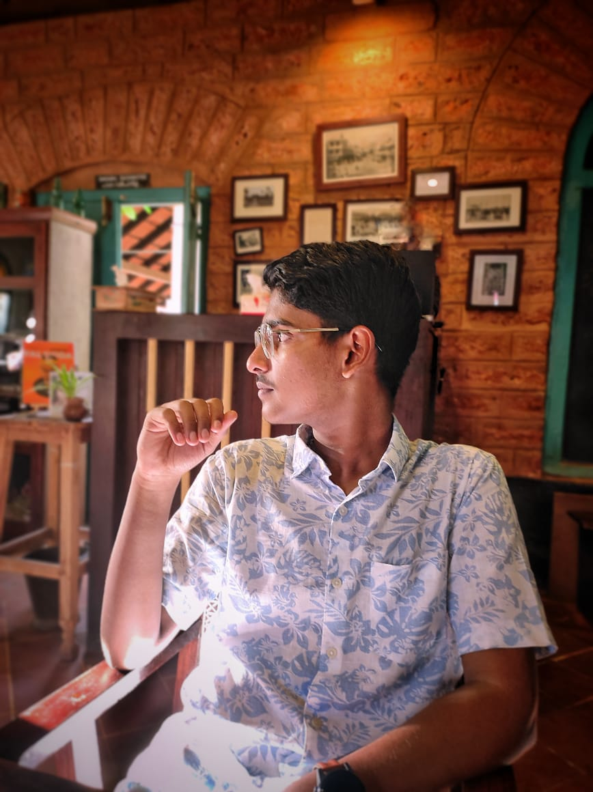

CHRISTO PIUS

Summary
A committed individual capable of utilizing accessible resources in accomplishing assigned tasks. Eager to leverage acquired skills in web development to contribute to real-world projects. Quick learner with a collaborative spirit, seeking to join a team environment and gain experience in the ever-evolving field of computer science.
Education
Don Bosco HSS
Higher secondary Education
Jun 2021-April 2023-
College of engineering chenghanur
B-Tech degree in computer science
Sept 2023- present
Awards and certificates
- Programming in C certification - FOCES CEC
- DEvelop GenAI apps with Gemini and streamlit - GDSC CEC
- Introduction to GenAI-GDSC CEC
- Website UI/UX designing using ChatGPT - Simplilearn
Skills
- Communication skills ★★★★
- Leadership skills ★★★
- Problem solving skills★★★★
Hobbies
Contact me